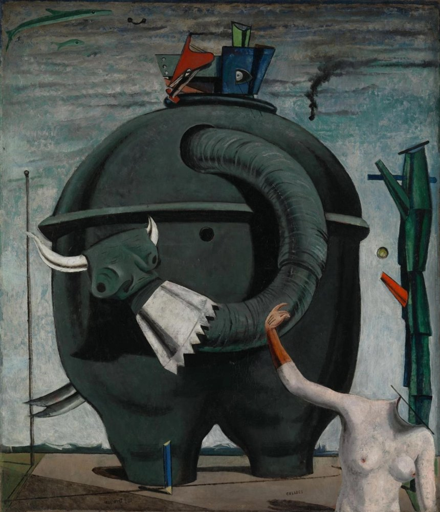

Celebes (The Elephant Celebes)
Max Ernst · 1921 · Oil paint on canvas · 125.4 × 107.9 cm · Tate, London
In copyright. Look and learn: shown for study, not for download.
Ernst painted Celebes in Cologne in 1921; the body of the creature was taken from a photograph of a two-legged clay corn bin made by the Konkomba of West Africa. The poet Paul Éluard visited him that year, bought the painting and took it to Paris. It stayed with Éluard until 1938, when Roland Penrose bought it; Penrose's sale of it to the Tate in 1975 paid for the Elephant Trust, which still gives grants to artists. On the back of the canvas are doodles, among them two figures with golf clubs.